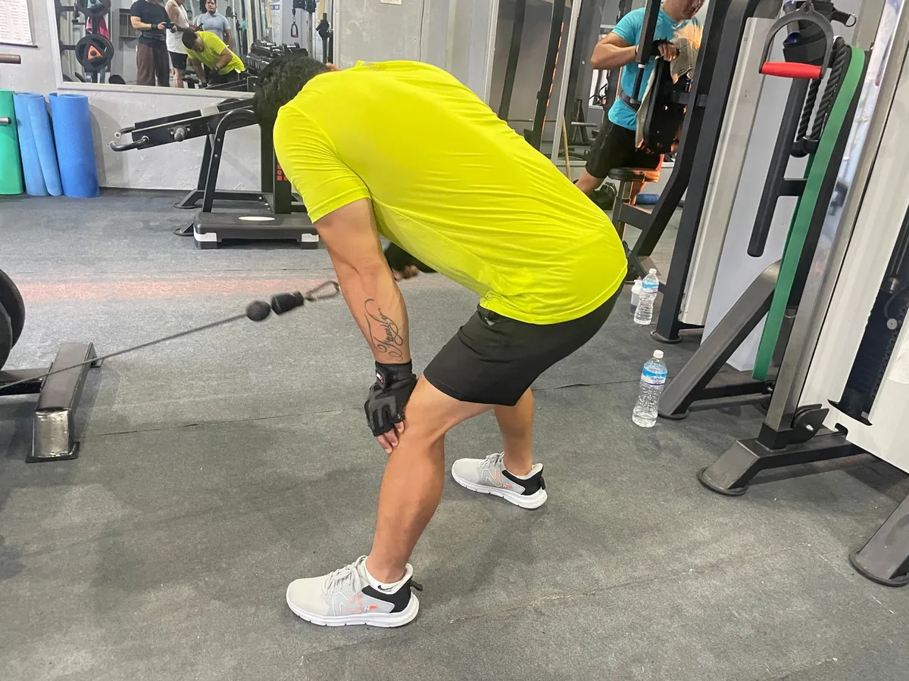
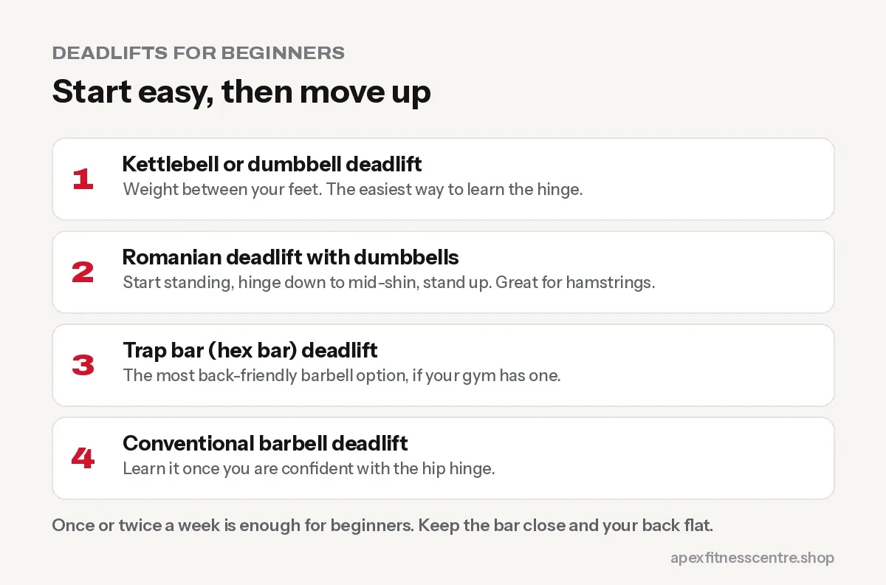

How to Deadlift for Beginners Without Hurting Your Back
The deadlift is safe when done right. Learn the setup, hip hinge, back position, breathing, best beginner variations and the most common mistakes.

The deadlift has a scary reputation, but done with good form it is one of the best exercises for a strong back, glutes, hamstrings and grip, and for real-life strength, every time you pick something up from the floor. Back injuries usually come from rounding the lower back, jerking the weight, or lifting too heavy too soon. All three are avoidable.
Learn the hip hinge first
The deadlift is a hinge: you bend at the hips, not the waist, while your back stays straight.
Practice drill: Stand about 15 cm in front of a wall. Push your hips back to touch the wall while keeping your back flat and knees slightly bent. When you can do this smoothly 10 times, you understand the movement.

Best deadlift variations for beginners
- Kettlebell or dumbbell deadlift: weight between your feet. Easiest to learn.
- Romanian deadlift (RDL) with dumbbells: start standing, hinge down to mid-shin, stand up. Great for hamstrings.
- Trap bar (hex bar) deadlift: if your gym has one, it is the most back-friendly barbell option.
- Conventional barbell deadlift: learn it once you are confident with the hinge.

Step-by-step: conventional barbell deadlift
1. Feet
Stand with feet hip-width apart, the bar over the middle of your feet (about where your laces are).
2. Grip
Bend down and grip the bar just outside your legs, arms straight. Use a double overhand grip for as long as you can.
3. Set your back
Bend your knees until your shins touch the bar. Lift your chest, and think “long spine”: a flat back from head to hips. Shoulders slightly in front of the bar.
4. Brace and tighten
Take a breath into your belly, tighten your stomach, and pull the slack out of the bar. Pull up gently until you hear the plates click, before the weight leaves the floor.
5. Push the floor away
Drive through your whole foot, keeping the bar close to your legs. Hips and shoulders rise together.
6. Stand tall
Finish standing straight, squeezing your glutes. Do not lean back.
7. Lower with control
Push your hips back first, then bend your knees once the bar passes them. Set the bar down; do not drop it from the top.
Common mistakes
| Mistake | Fix |
|---|---|
| Rounded lower back | Lighter weight, set the back before pulling, lift from a raised block |
| Bar drifting away from legs | Keep it touching or very close to your shins and thighs |
| Hips shoot up first | Brace harder, push the floor away, lighter weight |
| Jerking the bar off the floor | Pull the slack out, then lift smoothly |
| Leaning back at the top | Stand straight and squeeze glutes |
| Looking up at the ceiling | Neutral neck, eyes on the floor a few metres ahead |
How heavy and how often?
- Start with 3 sets of 5 to 8 reps with a weight that feels easy.
- Once or twice a week is enough for beginners. Deadlifts are tiring.
- Add a small amount of weight each week while form stays clean.
Fit it into a full-body routine like our beginner gym workout plan.
Should you wear a belt?
Not at first. Learn to brace without one. A weightlifting belt can help on heavy sets later, but it does not replace good technique.
Frequently asked questions
Are deadlifts bad for your back?
No, when done with good form and sensible weights. They strengthen the muscles that protect your back. Rounding your lower back under heavy weight is what causes problems.
Should I deadlift if I already have back pain?
Get it checked by a doctor or physiotherapist first. Many people with past back pain later deadlift safely with guidance, starting light.
How much should a beginner deadlift?
Start light enough that every rep looks the same, even if that is just a pair of dumbbells or an empty bar.
What muscles do deadlifts work?
Mainly glutes, hamstrings, lower and upper back, forearms and core, with some thigh muscle involvement.
Sources
- ACSM position stand: progression models in resistance training for healthy adults (American College of Sports Medicine, 2009)
Ask a trainer at Apex Fitness Centre to watch your first deadlift sessions.
General information, not medical advice. Ask a doctor if you have a health condition. Results vary from person to person.
Comments
Loading comments…